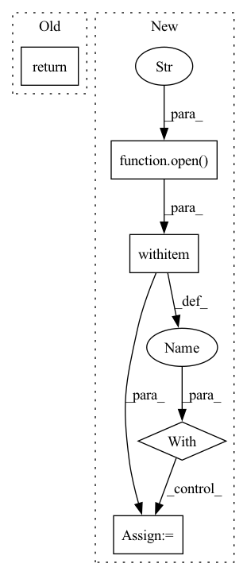

Pattern ID :15368
Before Change
with open(test_file, "r") as f:
test_data = ujson.load(f)
return train_data, test_data
def read_client_data(dataset, idx):After Change
train_data_dir = os.path.join("../dataset", dataset, "train/")
train_file = train_data_dir + "train" + str(idx) + "_" + ".npz"
with open(train_file, "rb") as f:
train_data = np.load(f, allow_pickle=True)["data"].tolist()
return train_data
In pattern: SUPERPATTERN
Frequency: 5
Non-data size: 5
Instances Fragment ID: 52079323
Project Name: tsingz0/pfl-non-iid
Commit Name: 4f394efe04f30dbd3cab4278467631854f997903
Time: 2022-01-14
Author: 2719584131@qq.com
File Name: system/utils/data_utils.py
M Class Name: AnonimousClass
N Class Name: AnonimousClass
M Method Name: read_data(3)
N Method Name: read_data(2)
M Parent Class:
N Parent Class:
M File Name: system/utils/data_utils.py
N File Name: system/utils/data_utils.py
M Start Line: 64
M End Line: 75
N Start Line: 63
N End Line: 82
Before Change
if os.path.isfile(possible_filelist):
with open(possible_filelist, "r") as f:
images = f.read().splitlines()
return images
if recursive:
make_dataset_rec(dir, images)After Change
images = []
if meta_path is not None:
with open(meta_path, "r") as f:
lines = f.readlines()
from tqdm import tqdm
for line in tqdm(lines):
line = line.strip() Fragment ID: 52079320
Project Name: mit-han-lab/gan-compression
Commit Name: 788f6907d955559d0539fc54acea0e0102e4a6eb
Time: 2021-01-11
Author: lmxyy1999@foxmail.com
File Name: data/image_folder.py
M Class Name: AnonimousClass
N Class Name: AnonimousClass
M Method Name: make_dataset(5)
N Method Name: make_dataset(5)
M Parent Class:
N Parent Class:
M File Name: data/image_folder.py
N File Name: data/image_folder.py
M Start Line: 33
M End Line: 60
N Start Line: 33
N End Line: 55
Before Change
try:
cmd = "grep avx512bw /proc/cpuinfo | grep avx512vl | grep avx512dq"
subprocess.check_output(cmd, shell=True)
return True
except subprocess.CalledProcessError:
return False
After Change
import sys
if sys.platform != "linux":
return False
with open("/proc/cpuinfo", encoding="ascii") as f:
lines = f.read()
return all(word in lines for word in ["avx512bw", "avx512vl", "avx512dq"])
types = [torch.float, torch.bfloat16] Fragment ID: 52079321
Project Name: pytorch/pytorch
Commit Name: c7d8d8f92525aefc09a97009f0d92063164bcdf4
Time: 2021-05-03
Author: nshulga@fb.com
File Name: test/test_mkldnn.py
M Class Name: AnonimousClass
N Class Name: AnonimousClass
M Method Name: has_bf16_support(0)
N Method Name: has_bf16_support(0)
M Parent Class:
N Parent Class:
M File Name: test/test_mkldnn.py
N File Name: test/test_mkldnn.py
M Start Line: 32
M End Line: 38
N Start Line: 33
N End Line: 37
Before Change
"quality_components": ["shape"], //, "discrete", "rotation", "translation"],
}
return loss_config, args.version
// --------------- from experimnet ---------After Change
parser.add_argument("--config", "-c", help="YAML configuration file", type=str, default="./models/att/att.yaml")
args = parser.parse_args()
with open(args.config, "r") as f:
config = yaml.safe_load(f)
return config
Fragment ID: 52079325
Project Name: maria-korosteleva/garment-pattern-estimation
Commit Name: bf8741628e2881724d2cbc9eee362bdd95ba4fc8
Time: 2022-04-18
Author: mariako@kaist.ac.kr
File Name: nn/evaluation_scripts/on_test_set_single.py
M Class Name: AnonimousClass
N Class Name: AnonimousClass
M Method Name: get_values_from_args(0)
N Method Name: get_values_from_args(0)
M Parent Class:
N Parent Class:
M File Name: nn/evaluation_scripts/on_test_set_single.py
N File Name: nn/evaluation_scripts/on_test_set_single.py
M Start Line: 30
M End Line: 43
N Start Line: 28
N End Line: 32
Before Change
self.file_IDs.append(dir)
self.file_labels.append(self.IDsLabels[dir])
return
def __getitem__(self, idx):
file_path = self.file_paths[idx]
file_id = self.file_IDs[idx]After Change
self.IDs,
self.IDsLabels], f)
else:
with open(cache_file, "rb") as f:
self.file_paths, self.file_IDs, self.file_labels, self.IDs, self.IDsLabels = pickle.load(f)
print("data set loaded from cache len: {}".format(len(self.file_paths)))
return Fragment ID: 52079316
Project Name: leoluopy/groupfacepytorch
Commit Name: 9c7b785fe403b4b6d0d28d348bfb437be1c8f54e
Time: 2020-12-24
Author: lpy1990fff
File Name: system/data_loader.py
M Class Name: IDDataSet
N Class Name: IDDataSet
M Method Name: __init__(3)
N Method Name: __init__(2)
M Parent Class:
N Parent Class:
M File Name: system/data_loader.py
N File Name: system/data_loader.py
M Start Line: 42
M End Line: 61
N Start Line: 34
N End Line: 74